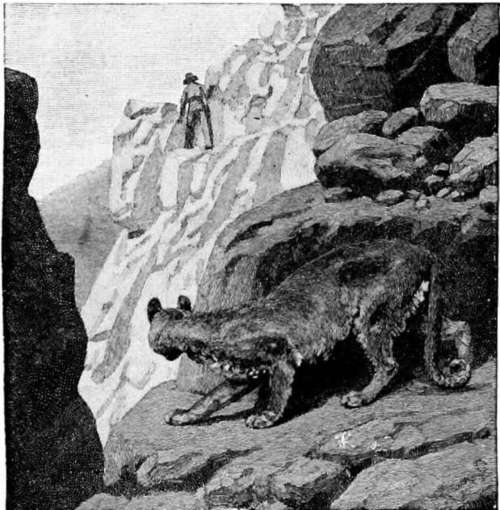
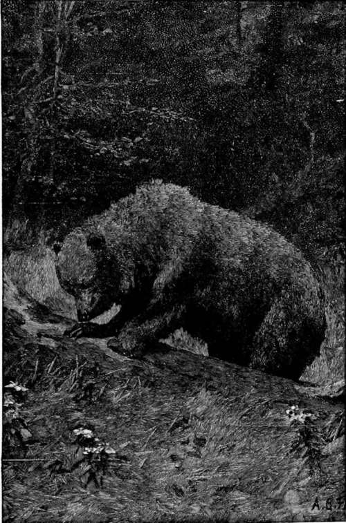

Hunting American Big Game. Part 2
Description
This section is from the book "Hunting", by Archibald Rogers. Also available from Amazon: Hunting.
Hunting American Big Game. Part 2
Experience having taught me long ago that it was well-nigh impossible to get good specimens of all the different varieties of big game on any one trip, I made up my mind to devote a certain amount of time each year to one variety. By this means their habits could be studied more closely, and the main point never lost sight of. In a short paper like this I may best take up the chief of these varieties, one by one, and, without regard to the time of their occurrence, tell something of my experiences with each. And first, as to perhaps the shyest, the Rocky Mountain sheep.
In the pursuit of Rocky Mountain sheep, the hunter, to be successful, must have a fondness for the mountains, a sure foot, good wind, and a head which no height will turn. These requisites, with patience and perseverance, will, sooner or later, as the hunter gains experience, reward him with ample returns. Sometimes, however, the unexpected will happen, and the following tale will serve as an example. We were camping well up in the mountains, and almost any hour of the day sheep could be seen with the glasses. I was after sheep; it was my intent, business, and purpose to get some if possible, and all my energies were concentrated in that direction.
There were two fine rams in particular that we could see about a mile and a half from camp, occupying the slope of a rocky point or promontory that jutted out from a spur of the range. These two had a commanding position; for while it seemed impossible to get to them from above, they could see every movement from below or on each side of them. However, after studying the country for two days, I found that by ascending the mountain behind them, and coming down again, I could still keep above them, though there was a very narrow ledge of rocks, rather a hazardous place, that had to be crossed to get to the point they were on. This narrow ledge they had to come back on to get to the main part of the mountain; so, stationing my companion there, and taking off my shoes, and putting on an extra pair of heavy stockings, I proceeded to crawl toward the sheep.
With due care, and not making a sound, I made a most successful stalk. Peering over the ledge, I just raised my head enough to be sure my game was still there. They were there, sure enough, within seventy-five yards of me, totally unconscious of danger, when all of a sudden they sprang to their feet, and dashed away from below me as though possessed of a devil. I fired hastily, but of course missed, and, turning, tried to run back to head them off, wondering what had started them, as I knew I had made no noise. But running over broken rock in one's stocking feet is a very different thing from the slow, deliberate movements that brought me there; and besides, in a few seconds I had the mortification of seeing my would-be victims bounding across the narrow ledge that separated them from the mountain. However, I thought with satisfaction that at least one would meet its death from my companion in hiding; but, alas! although the rams almost knocked him down, his cartridge missed fire.
I sneaking after the rams, the panther sneaking after me.
Regaining my shoes, which was a great relief, I soon joined my companion, and then discovered the curious adventure I had been made the subject of. It seems that when I had reached a point well down on the promontory I must have disturbed a cougar, which was evidently there for the same purpose I was, and which had stealthily followed me as I proceeded toward the sheep. Old Woody described it as highly amusing—I sneaking down after the rams, and the panther sneaking down upon me. As soon as the beast got an opportunity it turned off, and, making the descent, alarmed the rams, and thus spoiled my hunt.
For several days I watched this point, but those rams never came back to it again. However, not long after this I was amply rewarded, and secured a fine specimen. From one of the high ledges I was looking down into a sort of amphitheatre shut in by massive rocky heights. In this secluded retreat a little band of ewes, with one grand old patriarch as their master, could be seen every day disporting themselves with many a curious gambol. After many unsuccessful attempts I was enabled to get a shot; and great was my delight to deprive this little band of their supercilious protector. Upon another occasion I was camping away back up in the mountains, where there were about eighteen inches of snow on the ground. The weather had been villanous; there was no meat in the camp, and I determined to see if I could not get a deer. The prospect was not very cheering; for shortly after starting a heavy fog shut down, hiding all objects from view. I had not proceeded far, however, when I struck the fresh track of a ram; and, following it cautiously for about a mile through the open, it led into a dense patch of pine on the side of the mountain. Proceeding very carefully now, I soon made out the outline of a fine old ram that had wandered off here in the timber to be by himself. Giving him no time to run, for I was close upon him, certainly not farther than twenty-five yards, I planted a shot just back of the shoulder; but he did not seem to mind it. I gave him another when he started to walk slowly off. One more shot in the same place, and down he came. Even then he died hard. Such is the vitality of an old ram; for upon examining him I found his heart all torn to pieces. This was a good head of nearly sixteen inches circumference of horns, and the girth of chest was forty-six inches. In returning to camp for horses to pack him on, I jumped five more sheep; but having done well enough, they were allowed to disappear in safety.
Tearing open a fallen tree
Sheep have a wonderfully keen vision, and it is absolutely useless to try to get to them if they once see you, unless you happen to be above them, and on their favorite runway; then they huddle together, and try to break back past you. The only safe rule is to travel high, and keep working up above their feeding-grounds. In the spring of the year they are much easier to kill than in the fall; for then the heavy winter snows have driven them out of the mountains, and they come low down after the fresh green grass. The rams are then in bands, having laid aside the hostility that later in the year seems to possess each and every one of them.
Continue to: